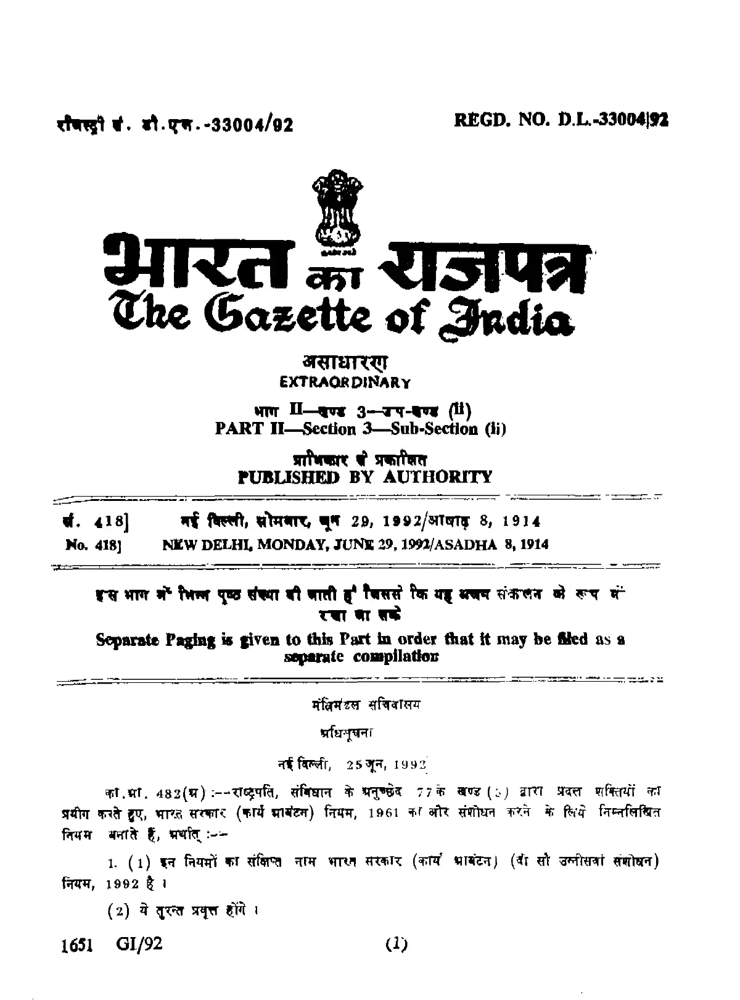
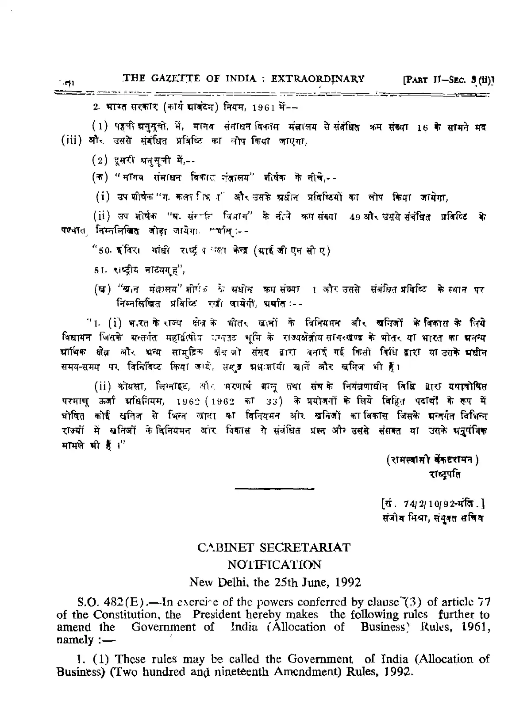
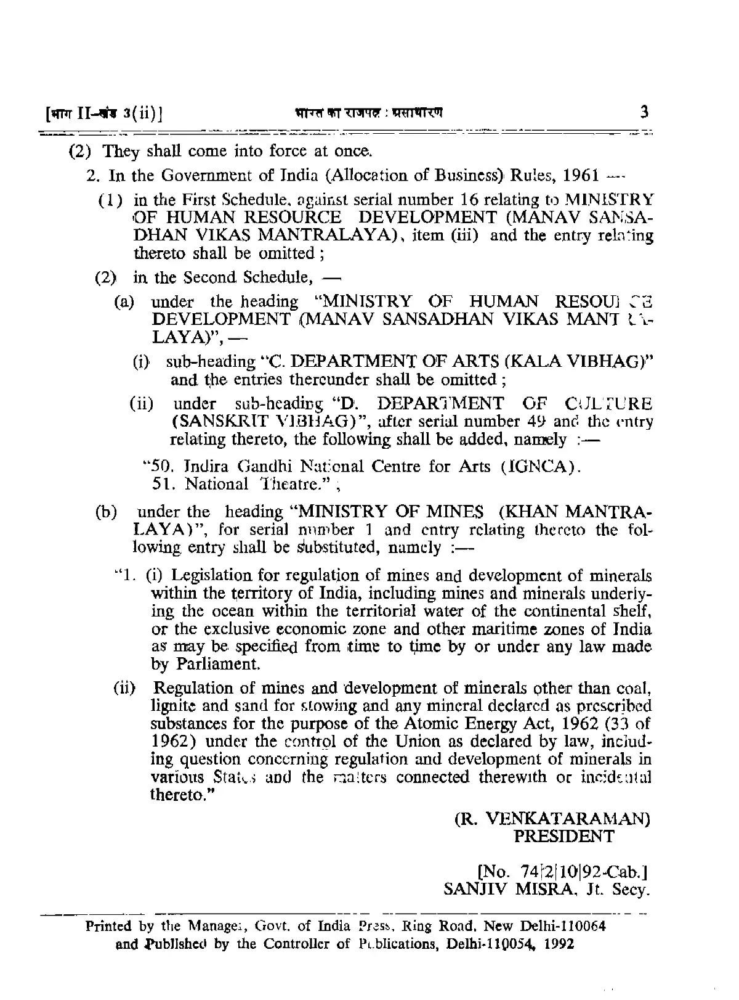

Amendment #219 (S.O. 482(E), 1992)
4 changes: 1 to the First Schedule, 3 to the Second Schedule. 3 applied1 not applied
The order, page by page
Page 1 of 4

Page 2 of 4

Page 3 of 4

1234Schedule 1 › MINISTRY OF HUMAN RESOURCE DEVELOPMENT › item iii
applied at schedule 1 › ministry 16 › department iii in the Rules after #219
Schedule 2 › MINISTRY OF HUMAN RESOURCE DEVELOPMENT › DEPARTMENT OF ARTS
applied at schedule 2 › ministry MINISTRY OF HUMAN RESOURCE DEVELOP- MENT › department C in the Rules after #219
after Schedule 2 › MINISTRY OF HUMAN RESOURCE DEVELOPMENT › DEPARTMENT OF CULTURE › entry 49
- 50. Indira Gandhi National Centre for Arts (IGNCA).
- 51. National Theatre.
not applied (the change could not be placed in the Rules as read; see How this document was read)
Schedule 2 › MINISTRY OF MINES › entry 1
- 1.
- i. Legislation for regulation of mines and development of minerals within the territory of India, including mines and minerals underlying the ocean within the territorial water of the continental shelf or the exclusive economic zone and other maritime zones of India as may be specified from time to…
- ii. Regulation of mines and development of minerals other than coal lignite and sand for stowing and any mineral declared as prescribed substances for the purpose of the Atomic Energy Act, 1962 (33 of 1962) under the control of the Union as declared by law, including question concerning regulation and…
applied at schedule 2 › ministry MINISTRY OF MINES › entry 1 in the Rules after #219
Page 4 of 4
How this document was read
Known issues
| Change | Issue | Known as |
|---|---|---|
| 3 | change 3: no entry 49 under schedule 2 › ministry MINISTRY OF HUMAN RESOURCE DEVELOP- MENT › department D | Entries not in the state |
From the Government of India (Allocation of Business) Rules, 1961 and their amendments, as published by the Cabinet Secretariat (cabsec.gov.in), read by orgpedia. The readings of the older scanned gazettes have known gaps.